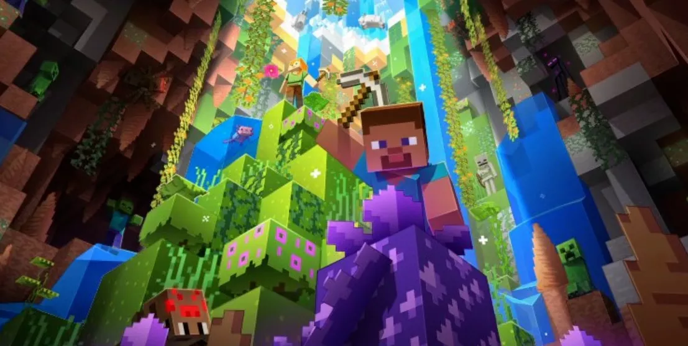
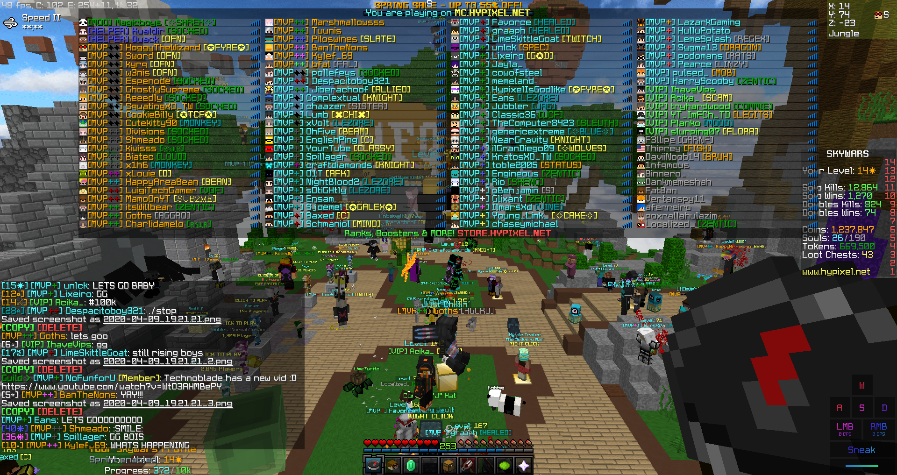

Minecraft is the best game in history!
Published 31 August 2022

Artwork of Minecraft's cover image. Credit: videogamer.
If I asked you if you have heard of Minecraft before you would probably say yes, after all you are on a blog site dedicated to Minecraft. If I asked you if you have played Minecraft before, chances are you would also say yes. Minecraft has taken the world by storm from the moment it was unveiled. And even though the game is 11 years old at this point, the blocky game is still the number one most sold game in history. Not only do the frequent updates add huge amounts of content into the game, but Minecraft also has one of the most dedicated fanbase in video game history with a whopping 130 million active players as of 2020. All this combined with the endless creativity Minecraft provides, it is easily the best game in history, and will likely hold this title for a while to come. Let’s dive into this in a bit more detail.
Minecraft's consistent and large additions make it unique
Artwork showcasing Minecraft update features. Credit: pc gamer.
Minecraft has released multiple smaller updates over the years, but only 19 major updates. This is small compared to other games, but its quality that counts here not quantity. Importantly, each and every one of Minecraft’s classic updates adds tons of features that players die for. For example, update 1.16 added many new items, blocks, structures and biomes. This completely revamped the Nether and everyone went wild. Similarly, the caves and cliffs update finally answered player pleas to change the boring caves that players saw as a chore to venture into, to a mind consuming world where players can get lost for hours. Comparing Minecraft to another popular game released just days before Minecraft, Call of Duty Modern Warfare 3 has not seen any major updates since its launch, and the few additions that have been added over the years only deal with only minor bug fixes and do not increase the value or feel of the game. This is what makes Minecraft unique, as not many games release constant content regularly, and therefore Minecraft is the best game in history.
Minecraft's fanbase and community helps it thrive
Screenshot of a lobby on Hypixel server. Credit: Hypixel.
Why buy one of those other games that will most likely get shutdown or become irrelevant? This won’t happen for Minecraft because it already has one of the largest fanbases in video game history with over 130 million players each month. This is what makes Minecraft so enormously successful. Minecraft also has an uncountable number of servers that players can come together on and play. Each offering different experiences or features like bed wars (a game about protection your bed), bridge, etc. Minecraft server Hypixel constantly has over 100,000 players online during peak hours and is packed with intensity. On the contrary there are also Minecraft servers that put players up against over players in PVP battles or settings, where players compete to dominate the leading servers. Popular anarchy server 2b2t has been running even before Minecraft’s Alpha versions and is still the most popular server players go to have a place with no rules. Having a wide range of servers improves speed and performance, as having just one server would get boring and be super crowded, as well as having a reduced selection of features available to players. So, having a community that is very diverse and dedicated, makes Minecraft the best game in history.
Minecraft's storyline and gameplay lead to endless creativity

GIF of the Ender Dragon flying. Credit: Minecraft Fandom.
Since the full release, update 1.0, defeating the Ender Dragon has always been the overarching goal of any Minecraft world. However, the beauty of Minecraft is that players are not required to follow this set path, instead they can do whatever they want. Players have absolute freedom, they can choose to live a peaceful life and live in harmony in a small village, or they can be ruthless and destroy everything they look at. Players can build massive mega structures, or small little huts. There are also endless mods that players can choose from to extend the games vanilla features, there are mods about space, farming, technical and more. Players even find new ways to enjoy Minecraft whether it is through challenges or simply trying a new play style, it is like Minecraft is a bundle that has many other games included. This wide range of ways to play Minecraft easily makes it the best game in history.
Conclusion
So, to sum up. Minecraft’s constant updates continually breathe new life into the game and make it satisfyingly creative. In addition, the game rocks because of the help of the massive and dedicated fanbase. Finally, as more and more unofficial content is regularly released as mods this game has endless possibilities and will never be boring. The goals and features of Minecraft appeals to a wide range of audience which allows it to be the best game in history, and to inspire millions of players around the globe.